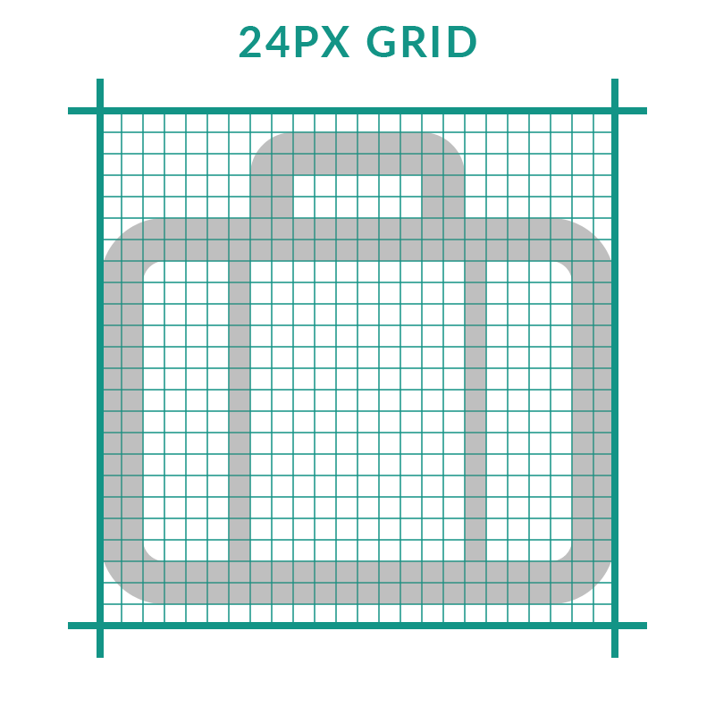
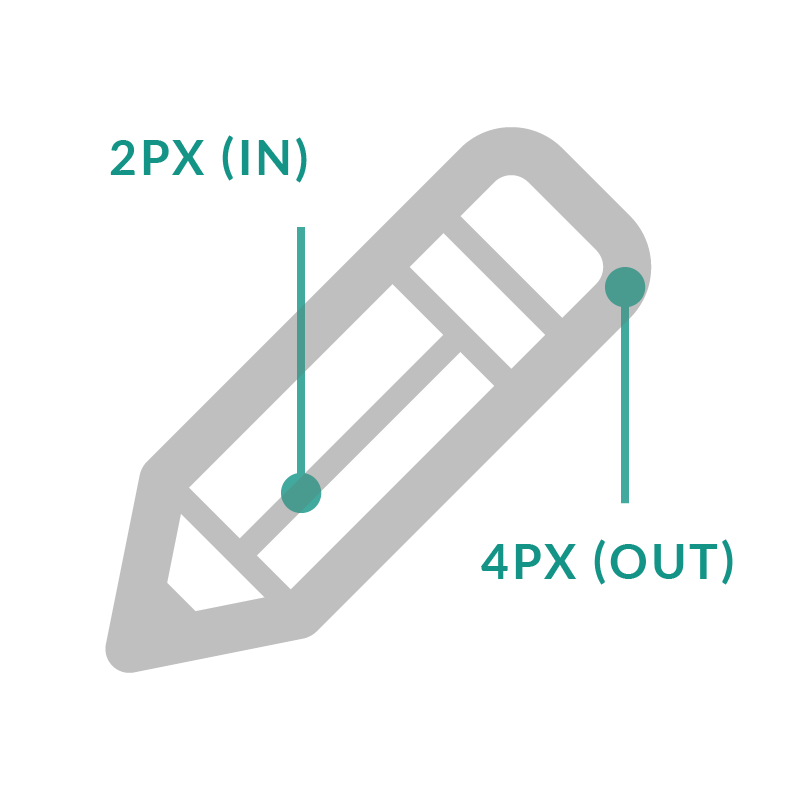

Challenge
Give everyday interface symbols a consistent character, from simple navigation to detailed objects.
A set of 120+ line icons drawn on a 24px grid. Bold outer strokes hold each shape together, and finer inner lines carry the detail, so every icon stays readable in apps, forms, decks and infographics.
Give everyday interface symbols a consistent character, from simple navigation to detailed objects.
A 24px grid, soft outer curves, and two line weights that bring the collection together.
120+ coordinated icons spanning communication, media, security, navigation, and technology.
The Foundation
I designed the icons on a 24px grid, pairing rounded outer contours with sharper interior details. Repeated decisions about shape and line give different subjects a family resemblance.

Every stroke sits on whole pixels of a 24px grid, so edges stay crisp at 1x instead of blurring.
Outer corners are rounded to feel friendly. Inner details keep sharp corners so they read as precise.

The outer stroke is always twice the inner stroke (4px and 2px at the drawing size), on every icon.
The Visual Language
Heavier outlines define each silhouette, while finer lines describe the details. Across simple symbols and more complex objects, that contrast gives the set its identity.
The Collection
The set covers the jobs a SaaS product actually needs: files and messaging, media, security, cloud, data and servers, devices, analytics and status. Each icon is a single-color shape, so it picks up any brand color without redrawing.
In Context
Icons only prove themselves inside an interface. I placed these icons in a sign-up form and a mobile nav drawer to check two things: that the icons sit level with the type beside them, and that they hold up in light and dark UI and in active and resting states.
Takeaways
01
Giving the outline and the detail different jobs did more for legibility than any single shape decision.
02
The grid, the corner rule and the 2:1 ratio let me draw icon 120 to match icon 1 without comparing them by eye.
03
An icon that looks right alone can sit too high next to text or vanish on dark. Mockups caught that before release.
Up Next